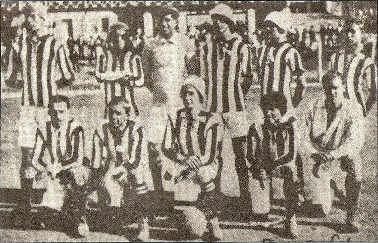
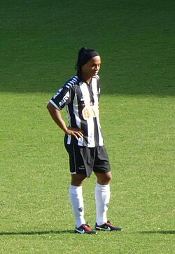

Clube Atlético Mineiro
Clube Atlético Mineiro (CAM), mais conhecido como Atlético Mineiro, Mineiro (nos países de língua espanhola da América do Sul), Atlético ou pelo apelido Galo, é um clube de futebol profissional brasileiro sediado na cidade de Belo Horizonte, Minas Gerais. Foi fundado em 25 de março de 1908 por um grupo de estudantes e suas cores tradicionais são o preto e o branco. Foi inicialmente chamado de Athlético Mineiro Football Club, adotando, em 1913, seu nome definitivo. Seu símbolo e alcunha mais popular é o Galo, mascote oficial desde o final da década de 1930.
História
Origens
O Athlético Mineiro Football Club foi fundado em 25 de março de 1908 por um grupo de estudantes de classe média em Belo Horizonte. Quase um ano após seu surgimento o Atlético disputou sua primeira partida oficial: em 21 de março de 1909 venceu o Sport Club Foot-Ball por 3x0. O autor do primeiro gol foi Aníbal Machado, que anos mais tarde se transformaria em um dos grandes escritores da Literatura Brasileira por meio de sua obra principal: Viagem aos Seios de Duília. Em 1912, mudou a grafia do nome para a atual: Clube Atlético Mineiro. Alguns anos se passaram até que em 1914 a Liga Mineira de Esportes realizou a primeira competição oficial em Minas Gerais: a Taça Bueno Brandão. O torneio foi patrocinado pelo governador Júlio Bueno Brandão, o Atlético foi o campeão. No ano seguinte, foi realizado o primeiro Campeonato Mineiro da história, também vencido pelo Atlético. As duas grandes conquistas não significaram o prenúncio de uma hegemonia, pois foi o América Futebol Clube o dominador do futebol local por aqueles anos conquistando dez campeonatos estaduais consecutivos (1916 a 1925). Também Foi por essa época que Atlético e América passaram a protagonizar o Clássico das Multidões.

A conquista da América
Classificado para a Copa Libertadores de 2013, a diretoria manteve a mesma base do ano anterior e contratou alguns jogadores experientes como Gilberto Silva, além de promover a volta do grande ídolo Diego Tardelli. O time teve um excelente desempenho em campo terminando a primeira fase como o melhor time do torneio. Nas quartas-de-finais o Atlético eliminou o São Paulo FC com um placar agregado de 6x2. Depois do grande duelo contra os paulistas o time mineiro eliminou o Club Tijuana e o Newell's com bastante sofrimento. Na finalíssima contra o Club Olimpia do Paraguai o Atlético conseguiu o título ao vencer os rivais nos pênaltis.

Triplete Alvinegro (Tríplice Coroa Nacional)
Em 5 de março de 2021, a diretoria do clube oficializou a contratação de Cuca como novo comandante do clube, que retornava ao clube após a passagem vitoriosa em 2013. Nos primeiros jogos Cuca enfrentou rejeição de parte da torcida, e após alguns resultados iniciais e a drástica mudança no esquema tático, a imprensa questionava se o Atlético conseguiria manter o nível do futebol que o time de Sampaoli apresentara em campo. Passados alguns jogos, o Galo foi se acertando e obteve a melhor campanha da primeira fase do estadual obtendo assim o direito de jogar por dois resultados iguais nas fases finais. Posteriormente o time conquistou o bicampeonato do campeonato mineiro ao empatar os dois confrontos da decisão em 0-0 com o América.
Pela 32ª rodada do Campeonato Brasileiro, o Galo enfrentou o Bahia, precisando de uma vitória para ser o campeão antecipado. O Galo enfrentou um jogo complicado, com o Bahia marcando dois gols em quatro minutos. O Galo, por sua vez, não se abateu pelo placar e conseguiu uma virada histórica de 3-2, com um gol de pênalti de Hulk, e dois gols de Keno, em cinco minutos. Com isso, o Clube Atlético Mineiro conquistava o Bicampeonato da Competição, de forma antecipada, após 50 anos de espera. Ao fim da competição o Galo terminou com 84 pontos, sendo essa a segunda melhor campanha da história dos pontos corridos.
Ainda restava uma decisão pela frente, a Copa do Brasil, na qual o Atlético buscava o bicampeonato diante do Athletico Paranaense. O Galo massacrou o adversário no primeiro jogo em Belo Horizonte, vencendo por 4 a 0 e conquistando uma ampla vantagem para o jogo decisivo no dia 15 de Dezembro. No segundo jogo em Curitiba o Galo voltou a vencer o adversário por 2 a 1 e se sagrou bicampeão da Copa do Brasil, conquistando assim na temporada a Tríplice Coroa Nacional, da qual o Atlético optou por nomear o feito como Triplete Alvinegro.